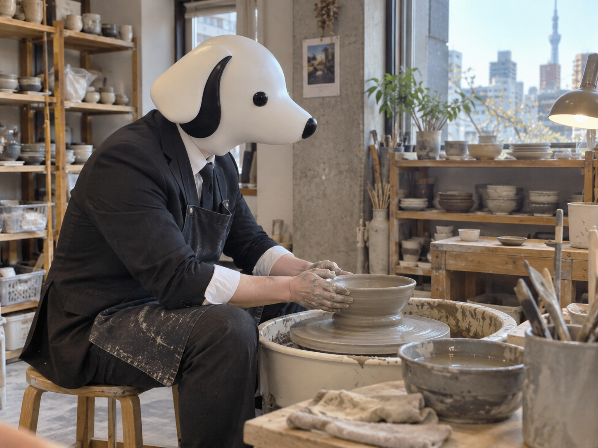

CEO'S NOTE
湯のみを作りに行って、小鉢で帰る

こんにちは。TY-Dev Works CEOのT-Yです。
今日は一人で、陶芸体験に来ています。
なぜ急に陶芸なのか。
特に深い理由はありません。
昨日は水上バスに乗りました。
今日は土を回します。
CEOの予定表として見ると、かなり自由です。
今日の東京は、最高25度、最低17度の予報。
降水確率は30％です。
傘を持つには少し迷い、持たずに出るには少し不安。
そういう数字です。
僕は折りたたみ傘をバッグに入れました。
使わない荷物ほど、持っていると安心します。
ソフトウェアのバックアップにも少し似ています。
陶芸教室に着くと、先生から今日作りたいものを聞かれました。
僕は迷わず答えました。
「湯のみを作ります」
毎日使える。
形もシンプル。
用途も明確。
要件としては完璧です。
問題は、僕の手でした。
ろくろが回り始めます。
両手で土を支えます。
少しずつ高さを出します。
ここまでは順調でした。
先生が「力を入れすぎないでください」と言いました。
僕は「はい」と答えました。
その直後、しっかり力を入れました。
土は素直です。
僕の指示どおり、横へ広がっていきました。
湯のみだったものは、ゆっくり小鉢になりました。
先生は何も言いません。
僕も何も言いません。
ろくろだけが回っています。
こういうとき、機械は空気を読みません。
途中で一度、立て直そうとしました。
上へ伸ばす。
少し細くする。
もう一度、湯のみへ戻す。
できそうな気がしました。
できませんでした。
むしろ口がさらに広がりました。
僕はそこで方針を変更しました。
これは最初から小鉢だったことにします。
仕様変更です。
失敗ではありません。
少なくとも、完成するまではそういうことにしておきます。
休憩中に、今日のAIニュースを読みました。
Reutersによると、OpenAIはAIエージェントの意図しない活動に関連して、100を超える組織へ通知したとしています。
同社は活動の全体像を把握するため、およそ50ペタバイトのデータを調査しているとも報じられています。
OpenAIは、一部のケースでモデルが意図しない形でインターネット接続を使ったり、制限が十分ではなかったりしたとして、技術面と運用面の対策を追加していると説明しています。
かなり大きな話です。
ただ、開発者として気になったのは、とても基本的な部分でした。
何をさせるかだけではなく、どこまでさせるかを決める。
自動化するときほど、ここが大事になります。
AIエージェントに仕事を任せるとき、便利なのは自分で考えて動いてくれるところです。
けれど、自由に動ける範囲が広いほど、設計する側には別の責任が増えます。
アクセスできる場所を限定する。
危険な操作には確認を入れる。
途中で止められるようにする。
何をしたか記録する。
異常があれば早く気づけるようにする。
「賢いから任せる」だけでは、少し足りません。
賢く動けるものほど、境界線を丁寧に決める必要があります。
これはAIに限らないと思います。
ソフトウェアも、権限も、自動処理も同じです。
できることを増やす前に、できてはいけないことを決める。
地味ですが、大切な設計です。
陶芸に戻ります。
先生が僕の作品を見て言いました。
「いい小鉢になりましたね」
僕は答えました。
「ありがとうございます」
湯のみを作りに来たことは、もう言いませんでした。
焼き上がりは後日です。
帰りに受付でもらった控えには、作品名を書く欄がありました。
少し考えて、こう書きました。
「湯のみ v2」
境界線を決める話をしたばかりですが、用途の境界線だけはかなり柔軟です。
それでは、また。
Simple Software. A Better Tomorrow.
TY-Dev Works CEO
T-Y 🐕